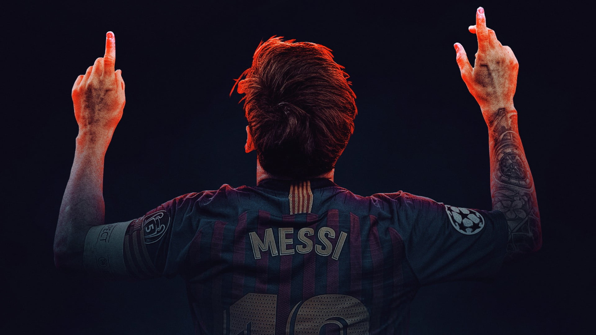

Research and write scripts for different topics that be directly recorded for video productoin
record and shoot videos talking into consideration proper settings followed by productoin & post productoin work
devlop complete curriculums for various techical topics to produce digital transforme coursers
